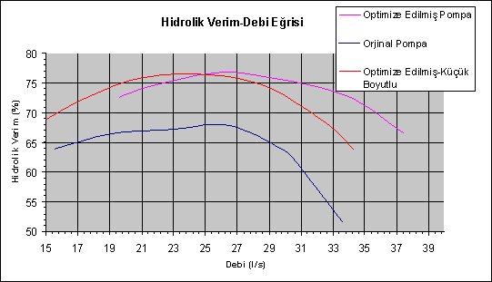

AMAÇ
AMAÇ
Bu
projede amaç, Elmaksan (www.elmaksan.com.tr)
tarafýndan üretimi yapýlan 8020 kod numaralý karýþýk akýþlý
pompanýn verimini Hesaplamalý Akýþkanlar Mekaniði yöntemlerini
kullanarak arttýrmaktýr.
ÖZET
Çalýþmada ilk olarak, FLUENT isimli HAD yazýlýmý kullanýlarak,
mevcut durum incelenmiþ ve performans kayýplarýnýn hangi
bölgelerde olduðu saptanmýþtýr. Bu analizlerin sonuçlarýna
göre stator kýsmýnýn optimize edilmesi kararlaþtýrýlmýþ
ve deðiþik stator geometrilerinin performansa etkileri incelenmiþtir.
SONUÇLAR
Yapýlan analizler sonucunda elde edilen son stator geometrisinin
verimde en fazla artýþý saðladýðý tespit edilmiþtir. Orijinal
durumda % 67 mertebelerinde* hesaplanan verimin %76.7 seviyesine
çýktýðý toplamda yaklaþýk 10 puanlýk bir verim artýþý elde
edildiði görülmüþtür. Ancak debi istenilen deðerden daha
yüksek olduðu için pompanýn tüm boyutlarý 0,9625 katsayýsý
ile çarpýlarak ufaltýlmýþtýr. Deðiþik noktalarda yapýlan
analizlerin sonuçlarý da Tablo, Tablo 2 ve Tablo 3 te verilmiþtir.
Orijinal durum, optimize edilmiþ durumun ve küçük boyutlu
pompanýn Basma Yüksekliði-Debi Eðrisi ile Hidrolik Verim-
Debi Eðrisi Þekil 13 ve Þekil 14'te görülebilir.
*
Normalde 12 kademeli pompanýn deney sonuçlarýna göre verim
%64 olarak ölçülmüþtür. Ancak 12 kademeli pompanýn analizini
yapmak mümkün olmadýðýndan tüm analizler tek kademe yapýlmýþtýr.
Tablo 1. Orijinal pompa analiz sonuçlarý.
Tablo 2. Optimize edilmiþ pompa analiz sonuçlarý.
Tablo 3. Optimize edilmiþ- Küçük boyutlupompa analiz
sonuçlarý.
Þekil 13. Üç pompanýn Basma Yüksekliði-Debi eðrisi.

Þekil 14. Üç pompanýn Basma Yüksekliði-Debi eðrisi.
TEÞEKKÜR
Yapýlan
analizler sýrasýnda, katý model hazýrlama konusunda yardýmlarýný
bizden esirgemeyen Sayýn Cüneyd Yýldýz'a çok teþekkür ederiz.
1.
GÝRÝÞ
Herhangi
bir Hesaplamalý Akýþkanlar Dinamiði (HAD) analizi genel
olarak üç aþamadan oluþmaktadýr. Bu aþamalar iþlem sýrasýna
göre;
olarak
sýralanabilir.
Bu
adýmlardan katý model ve sayýsal að tabakasý oluþturulmasý
ile ilgili iþlemler 'Katý Modelleme ve Sayýsal Að Çalýþmalarý'
baþlýðý altýnda, sýnýr þartlarý ve çözüm ayarlarýnýn tanýmlanmasý
ile ilgili iþlemler 'Analiz Çalýþmalarý' baþlýðý altýnda
detaylý olarak anlatýlmýþtýr. Sonuçlar ise 'Sonuçlar ve
Yorumlar' baþlýklý kýsýmda ele alýnmýþtýr.